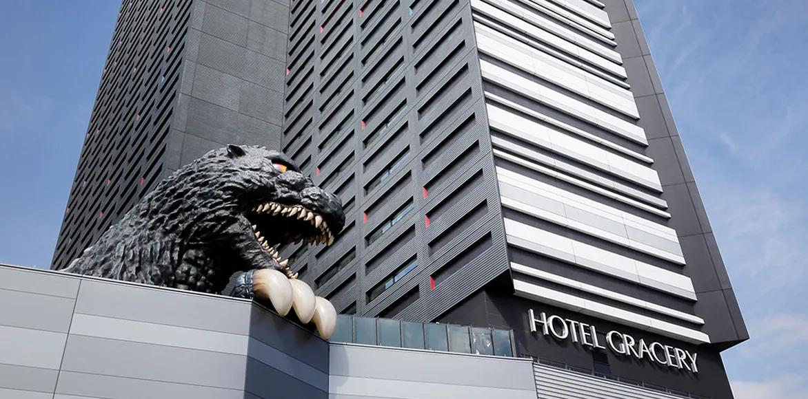
TOHO CINEMAS SHINJUKURELAY TALK 2026
歌舞伎町とともに歩む、エンタテインメントの進化
©TOHO CO., LTD.
01ORIGIN
歌舞伎町の街づくりと、東宝の挑戦が交差した場所
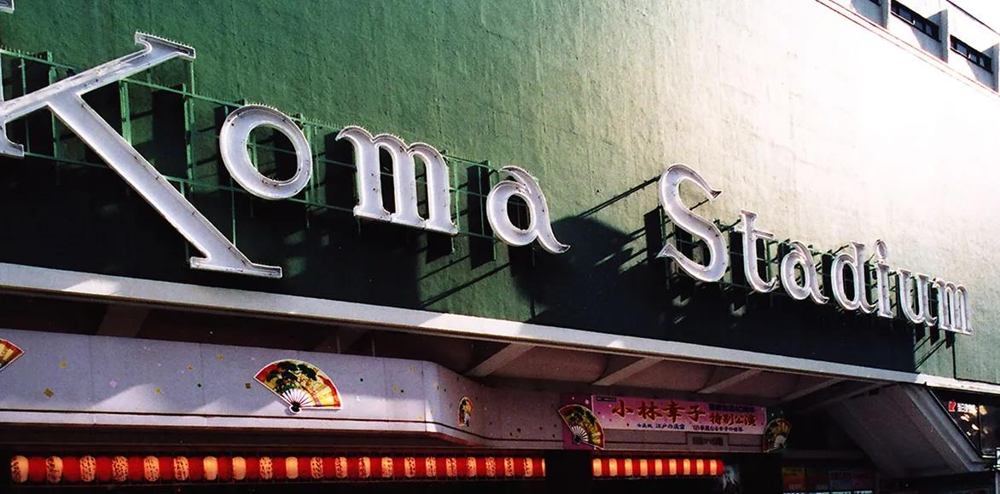
新宿コマ劇場 外観 資料提供：東宝株式会社 ©TOHO CO., LTD.
施設単体ではなく、
街に人を呼ぶための
文化装置として誕生。
02HEYDAY
演歌・ミュージカル・歌謡ショー。全国から観客が集う場所へ
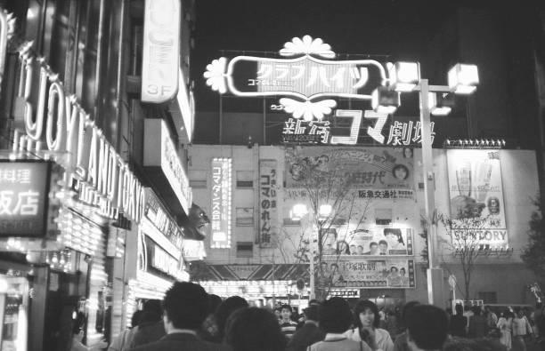
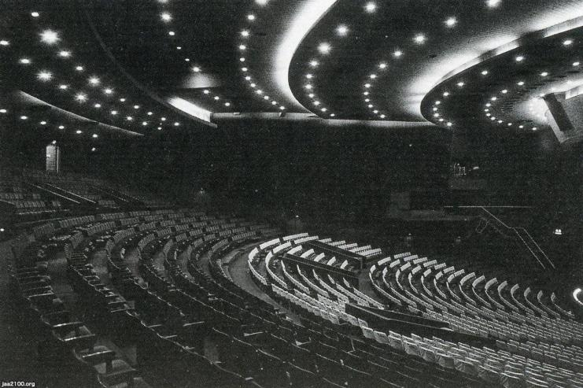
東京（昭和32年）新宿コマ劇場（内部）｜ジャパンアーカイブス‐Japan Archives https://jaa2100.org/entry/detail/061738.html
「コマ」の名は、こまのように回る三重の回り舞台から。
03TURNING POINT
老朽化、市場変化、そしてシネコン時代への転換
築50年を超え、
建物・設備の更新が課題に
演歌人気の低迷と
観客の減少
2008年閉館。
跡地の価値を再定義
「劇場を残す」から、
「この街に人を呼び続ける」へ
2008 — CLOSING / NEW BEGINNING
04REBIRTH
映画・宿泊・飲食を束ねた、歌舞伎町の新たなランドマーク
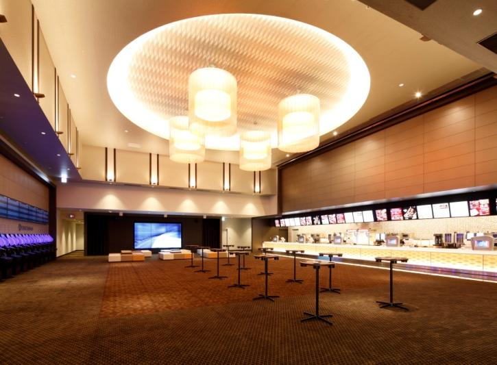
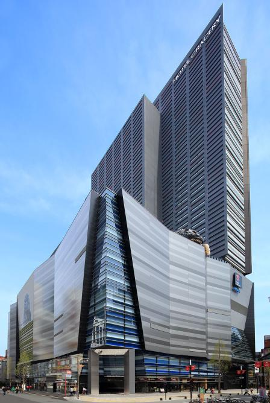
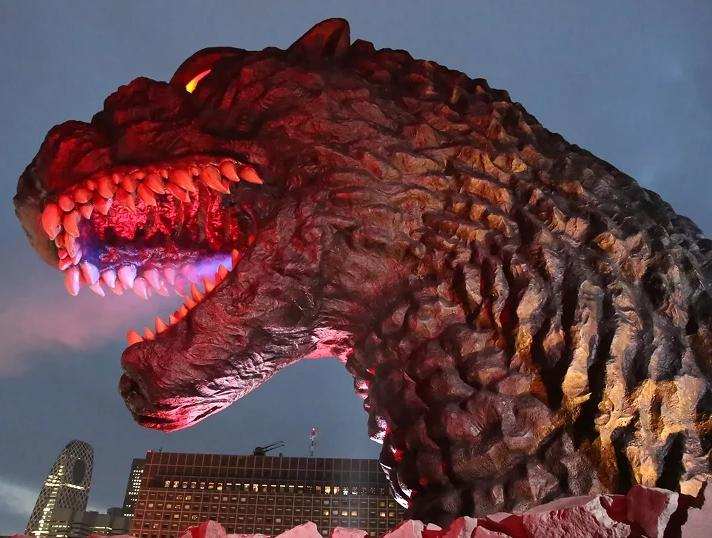
「新宿東宝ビル」外観／ゴジラヘッド 資料提供：東宝株式会社 ©TOHO CO., LTD.
05POSITION
作品・設備・IP・街の回遊をつなぐエンタテインメント拠点
新宿最大級の規模
多様な作品と上映設備
家族・若者・観光客を
歌舞伎町へ呼び込む
ゴジラと映画の力で
世界に新宿を発信
映画を観る目的地であり、歌舞伎町を体験する起点でもある。
出典：TOHOシネマズ株式会社 会社概要（「ご来場者数では日本トップシェア」「全国で70を超える映画館を運営」）／東宝株式会社 2026年2月期決算短信（映画興行事業の入場者数、2025年3月〜2026年2月）
06LANDSCAPE
競合というより、異なる価値で新宿の映画を盛り上げてきた4館
07CORRELATION
立地・体験・作品・価格帯の違いが、街全体の選択肢を豊かにする
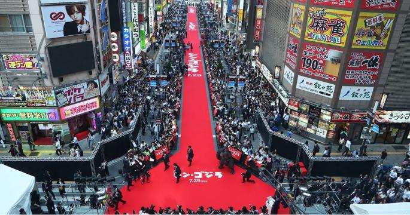
ゴジラロード 資料提供：東宝株式会社 ©TOHO CO., LTD.
08THEATER STRENGTHS
1共通項目自館の特徴・強み
東宝作品の発信力と、選べるプレミアム上映を一館に集約
邦画・アニメ・話題作を軸に、幅広いラインナップとイベント発信の拠点。
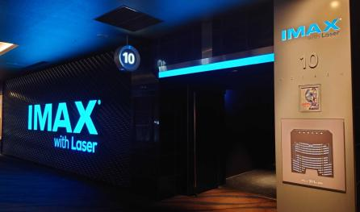
4Kレーザー投影、明るさ・色彩・コントラストと12chサウンドによる没入体験。
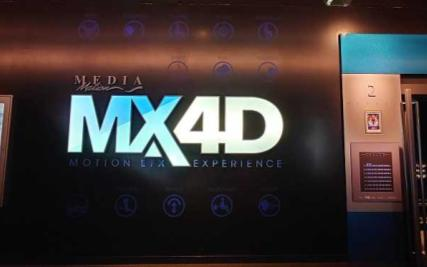
シートの動きと風・ミスト・香り・振動などの特殊効果が作品と連動。
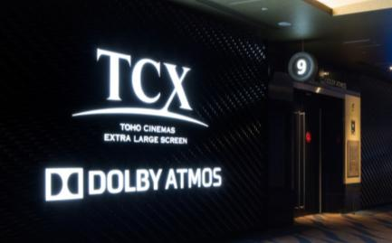
大型スクリーンとDolby Atmosによる、包み込まれる映像・音響体験。
IMAX®はIMAX Corporationの登録商標です。Dolby、Dolby AtmosはDolby Laboratoriesの商標です。MX4D™はMediaMation, Inc.の商標です。
09RENEWAL 2026
2共通項目新宿で運営するうえでの課題
人が集まる街だからこそ、
注文から受け取りまでの時間を短く。
09RENEWAL 2026
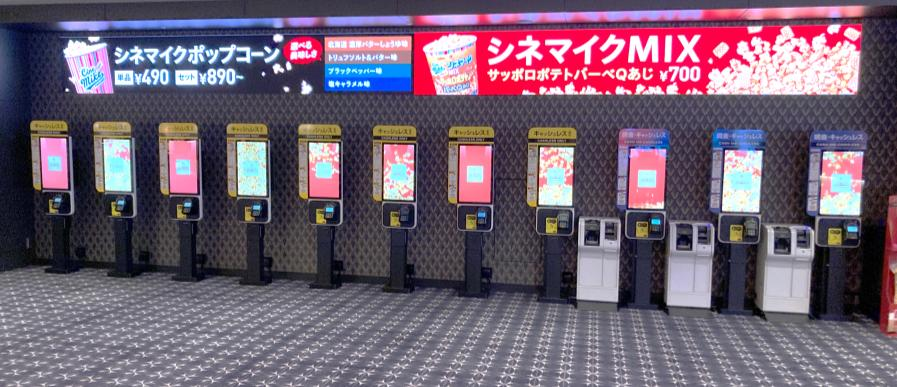
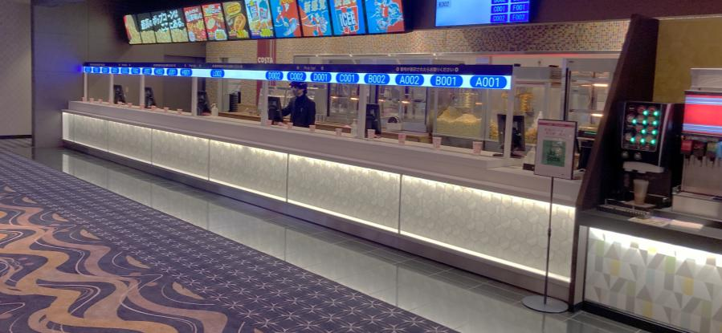
セルフオーダー端末／コンセッション ピックアップスタンド
館内端末から、
フード・ドリンクを直感的に注文
お客様自身の
スマートフォンから事前に注文
注文から商品受け取りまでの
待ち時間・導線を短縮
定額で好きなドリンクが
おかわり自由
10LEGACY
コマ劇場のDNAは、現在のTOHOシネマズ新宿へ
変わらない使命
歌舞伎町に人を呼び、
感動と記憶が生まれる「場」をつくる。
3共通項目他館・地域との連携の可能性
11TOGETHER
「映画館に通う」きっかけを、街ぐるみでつくる。
街の入口として、来街者・訪日客を新宿の映画館へつなぐ。
回遊の仕組みを、各館・地域の皆さんとともに考えたい。
シネコンも、ミニシアターも。
新宿は、一つの映画圏です。
新宿映画圏を、
ともに。
ありがとうございました
TOHO CINEMAS SHINJUKUTOHOシネマズ新宿
ゴジラヘッド 資料提供：東宝株式会社 ©TOHO CO., LTD.
PCのキーボード、プレゼン用リモコン（PageUp／PageDown）、マウスで操作できます。
【2画面で使うとき】Windows は Win+P で「拡張」を選択 → このファイルをChrome／Edgeで開いてプロジェクター側へ移動し F で全画面 → S で発表者ビューを開き、手元の画面へ移動します。